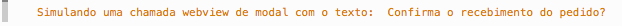
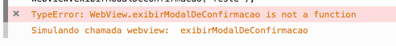
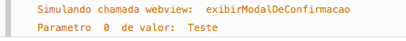

ECMAScript 2015 no Elo7 – Proxy
Publicado em:
@erikatakahara
Já faz algum tempo que ouvimos falar de ECMAScript 2015 (também conhecido como ECMAScript 6) com todas as suas novidades como map reduce, escopos, promises, etc. Mas infelizmente não podemos utilizá-las porque temos problema de compatibilidade entre os navegadores, ora por versão, ora por falta da implementação da especificação. Assim como todas as especificações (ECMA, CSS, HTML), as adoções são feitas aos poucos pelos navegadores. Com o tempo a aceitação se torna maior, até que um belo dia a especificação se torna recomendada e viável. Infelizmente, até chegar a esse ponto, temos alguns belos anos pela frente.
Alguns desenvolvedores recorrem a ferramentas, como o BabelJS. Esta ferramenta permite escrever em ECMAScript 2015 e traduz o script para a versão anterior da especificação. Porém nem todas as funcionalidades estão disponíveis e também não faz proveito das otimizações feitas pelos navegadores para as novidades do ECMA.
Apesar de ainda não ser viável, nada disso nos impede de testar algumas das novidades no Elo7!
Atualmente o nosso aplicativo do Elo7 é um híbrido de nativo e webview e, em determinadas partes do código, é necessário fazer uma ligação entre eles. Para exemplificar, em alguns momentos precisamos de uma confirmação da ação do usuário antes de realizar uma ação. Nesse caso podemos exibir uma modal ou até mesmo o clássico confirm do próprio JS na versão mobile web. Entretanto se você está navegando pelo aplicativo fica estranho em quesito de usabilidade exibir diferentes modais durante a navegação (ora a modal nativa, ora a modal mobile web).
Para resolvermos isso, a SDK do Android e do iOS possibilita a injeção de uma interface de Javascript na webview que cria uma ligação entre os dois. Dessa forma ao chamar uma função desse objeto na webview, este se encarregará de executar o código necessário no nativo.
Vamos a um exemplo simples: o cliente fez uma compra no site do Elo7, já realizou todo o processo de compra e agora precisa confirmar o recebimento do pacote. O nativo injeta um objeto chamado WebView na página com a função exibirModalDeConfirmacao(texto) mapeada. Essa função pode ser chamada na webview da seguinte forma:
if (WebView.exibirModalDeConfirmacao("Confirma o recebimento do pedido?")) {
//Fazer algo na confirmação
}
Voilá, no aplicativo exibimos o modal nativo! Perfeito, certo?
Agora vamos pensar no ponto de vista de processo. No Elo7 somos divididos em equipes e cada um possui uma responsabilidade. Nesse processo de ligação da webview com o nativo envolvemos dois times, o time Martell (responsável pelo Front-End) e o time do Stark (responsável pelos aplicativos nativos).
O código acima é responsabilidade do time Martell e precisa ser testado antes de entrar em produção. E para isso, necessitaria da ajuda do time Stark toda vez que alterasse nosso código. Sabemos que os Starks irão injetar um objeto com essa função e, ao chamá-la na webview, irá executar o código necessário. É realmente preciso testar que a ligação funciona? Sabemos que o requisito é chamar a função exibirModalDeConfirmacao. Não teria uma forma mais simples que não gastasse o tempo de outro time? E se os testes forem feito no navegador Desktop mesmo?
Seguindo essa linha, decidimos testar no Chrome carregando os scripts webview. Mas ao testar no navegador já nos deparamos com o seguinte erro:
Isso ocorre porque não temos o aplicativo nativo injetando o objeto chamado WebView. Então para resolvermos esse problema, adicionamos um script para o ambiente local a qual cria um objeto chamado WebView com um função chamada exibirModalDeConfirmacao:
var WebView = {
'exibirModalDeConfirmacao' : function(texto) {
console.log("Simulando uma chamada webview de modal com o texto: ", texto);
}
}
Ao testar no navegador será exibido o seguite:

Agora está melhor! Está bem mais claro qual chamada está sendo feita!
Mas essa solução a longo prazo começa a ficar custosa. Para toda nova chamada teremos que atualizar este objeto, adicionando as novas implementações e removendo as que não são mais utilizadas. Além disso, para cada novo objeto teremos que passar pelo mesmo processo. Será que não é possível imprimir na tela o nome de qualquer método que é chamado em cima desse objeto e os argumentos passados?
No ECMAScript 2015 temos uma forma simples de fazer isso: Proxy.
O Proxy permite criar comportamentos customizadas para operações fundamentais como ‘get’, ‘has’, ‘set’, etc a partir de um handler que iremos definir os novos comportamentos. No nosso caso precisamos alterar o comportamento get que seria no acesso das variáveis do novo objeto. O objeto Proxy recebe dois argumentos: o primeiro é um objeto a qual podemos delegar qualquer operação feita sobre o proxy.
O segundo argumento é um handler a qual podemos definir comportamentos customizados para operações fundamentais.
Exemplo de delegação:
var meuObjeto = {};
var proxy = new Proxy(meuObjeto);
proxy.meuMetodo = "Olá Mundo!";
console.log(meuObjeto.meuMetodo); // Imprime "Olá Mundo" no console.
Exemplo do handler:
var handler = {
get: function(target, name) {
console.log("Simulando chamada webview: ", name);
}
};
var WebView = new Proxy({}, handler);
WebView.exibirModalDeConfirmacao("Teste");
Neste caso sobrescrevemos como é feito o acesso a qualquer propriedade/função do objeto, o código irá imprimir o seguinte:

Ocorreu um erro durante a execução porque esperava-se que retornasse uma função, e como não adicionamos nenhum retorno para o nosso handler foi lançada essa exceção. Isso pode ser facilmente corrigido:
var handler = {
get: function(target, name) {
return function() {
console.log("Simulando chamada webview: ", name);
}
}
};
Agora o código roda sem erros e imprime exatamente o que precisamos! Mas ainda está faltando imprimir os parâmetros que passamos no nosso método exibirModalDeConfirmacao. Isso pode ser facilmente corrigido com o nosso querido arguments.
var handler = {
get: function(target, name) {
return function() {
console.log("Simulando chamada webview: ", name);
for(key in arguments)
console.log("Parametro ", key, " de valor: ", arguments[key]);
}
}
};

E agora temos exatamente o que precisamos! Uma forma mais simples de testar, deixando bem claro o que está sendo chamado e quais são os parâmetros passados.
Por que não aproveitamos e utilizamos uma nova funcionalidade do ECMAScript 2015 chamada Template String?
É bem simples, ao invés de declarar a string com aspas simples ou duplas, declaramos com a crase. Dessa forma podemos interpolar com os valores das nossas variáveis:
console.log(`Simulando chamada webview: ${name}`);
for(key in arguments)
console.log("Parametro ${key} de valor: ${arguments[key]}");
E teremos o mesmo resultado! Um outro exemplo legal é a combinação de checkbox hack com acessibilidade (WAI-ARIA). Se fizermos um proxy na alteração do valor do checkbox podemos modificar o wai-aria que determina se tem um menu aberto ou não.
Existem diversos lugares que poderíamos utilizá-lo. O site da MDN tem alguns exemplos bem interessantes. Recomendo a todos que tiverem interesse em Proxy.
Apenas o Firefox e o Edge suportam essa especificação atualmente.
E você? De que forma utilizaria o Proxy? =)